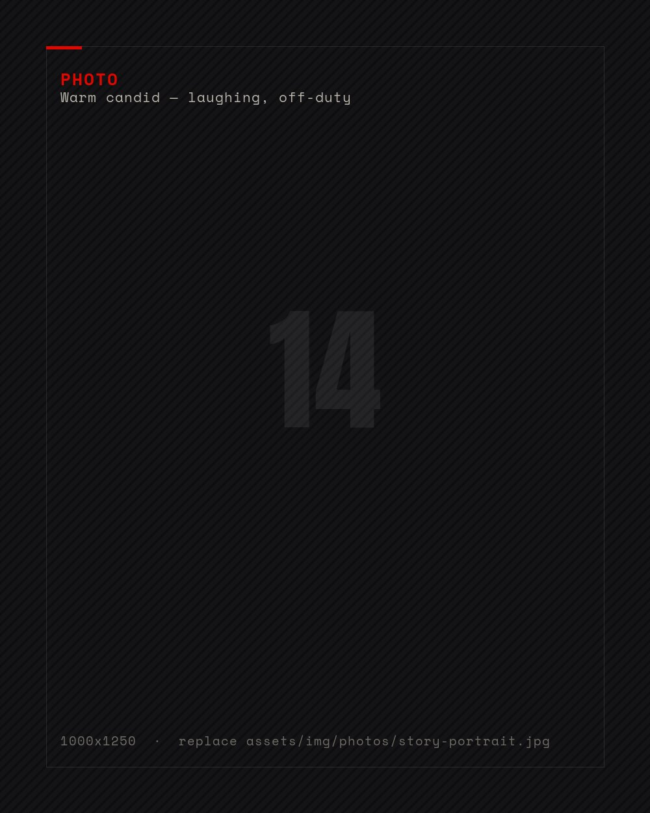

Home / 04 · Story
The
hyperpolyglotHYPIA No. 420
Fluent in ten languages, proficient in eight more, and able to hold a conversation in twenty-five. The exact total she won't give: naming the number might jinx the count of all the languages she still wants to learn.
Mainz to Maribor
to everywhere
/01 — THE ORIGIN STORY
Born in Mainz, Germany, to a couple from the Maribor area who worked abroad, Ramona grew up bilingual in German and Slovenian. In her private international kindergarten, a beloved teacher — married to a Thai woman — opened every morning circle with a song in all the children's home languages: “Good morning, good morning, dobro jutro, dobro jutro, buenos días, buenos días…” She still sings it today, in a voice clear enough to raise goosebumps.
Her parents never called Germany home. Every holiday, every saved mark went into trips to Slovenia and the house they were building near Maribor. When Ramona was ten, the family moved back for good — a culture shock for a fourth-grader from an international school, softened by classmates and teachers, and the quiet beginning of a much bigger map.
The engineer who sings
Brains and beauty were never in competition. After high school she enrolled at the Faculty of Mechanical Engineering in Maribor, studying textile technology and eco-textile engineering. Through the European COST project she was invited to Portugal, extending her stay with Erasmus at the University of Minho in Guimarães for a year.
Back in Maribor she completed postgraduate studies in technical environmental protection — earning the title Master of Science. The languages, meanwhile, kept multiplying in the background, one telenovela at a time.

HYPIA — The International Association of Hyperpolyglots
Member No. 420 — the only one from Štajerska
HYPIA's bar for entry is eight languages spoken and written fluently. Ramona cleared it on eight foreign languages alone — German and Slovenian, both native, bring the total to ten. The process: numerous interviews in different languages, written answers, essays — again in different languages. In December 2024 she became member No. 420 of the association, one of only three Slovenians — and, as she jokes, the only woman from Štajerska.
“I don't know all these languages because I'm gifted,” she insists. “It's the fruit of hard, systematic work.” The hardest of them all? Norwegian — “because Norwegians speak such excellent English that you can hardly get them to talk to you in their own language.”
The language
inventory
/02 — AS DECLARED TO HYPIA
Fluent in 10 · proficient in 8 more · communicates in 25+ · sings in 50. Still counting.
Her advice
to learners
/03 — THE METHOD
“Be determined, stay focused, create a consistent schedule. Don't be afraid of mistakes — everyone makes them. Don't compare yourself to others; focus on your own pace. The more you expose yourself to a language, the faster you'll learn it. And once you've mastered it — don't stop. Keep practising.”
Her own exposure system runs everywhere: series and shows in foreign languages at home, lessons through the car speakers, several languages at once — currently Turkish, Romanian and Dutch, while revising Swedish, Norwegian, Malay and Indonesian.
The rule that started it all
Learn the song before the grammar. A melody carries pronunciation, rhythm and stress in one package, and it sticks where a vocabulary list does not. By the time the meaning arrives, the mouth already knows the shape of the language.
It is also why she can sing in fifty languages and speak ten: the singing always runs a long way ahead.
You know a language when you're relaxed in it — regardless of any grammatical mistake.— Ramona Irgolič · Dnevnik, 2025